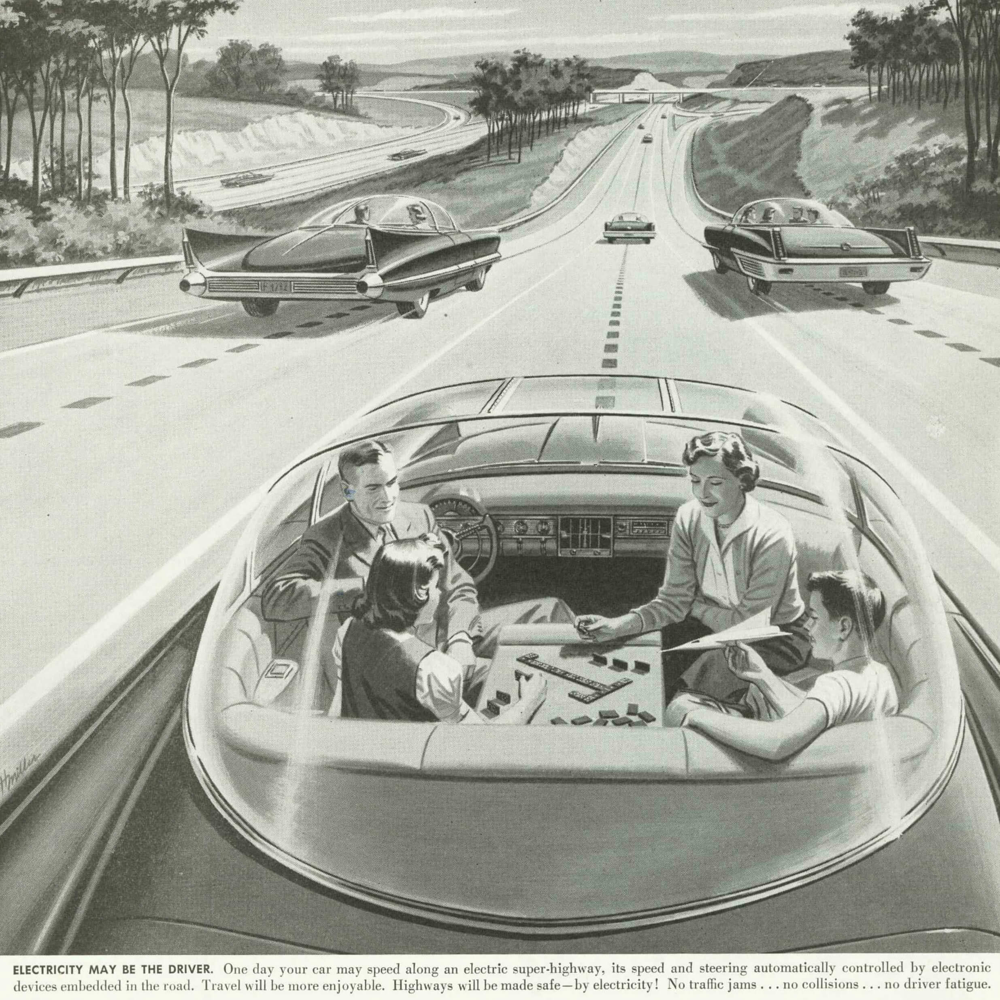

The Rise of the Autobots

Human drivers are so twentieth century. They’re prone to errors, have terrible fuel economy and they tend to get distracted, or sometimes even fall asleep. But in an increasingly connected world, robots will help aid us in our needs for transportation.
The first digitally operated and programmable robot was invented by George Devol in 1954 and was ultimately called the Unimate [1]. The first Unimate was sold in 1960 to General Motors and used in a plant in Trenton, New Jersey to lift and stack hot pieces of metal from a die casting machine. Since then we’ve come a long way and robots
We’ve come a long way since the Unimate, and robots can handle situations of increasing complexity. Using a multitude of sensors, they keep track of every single thing that has even but a remote chance of colliding with the car, both the seen and the unseen. Objects are measured, tracked and the risks assessed continuously. The car knows exactly where it is, and increasingly, what the meaning of the things are around it. It will read signs, take turns, break for a family of ducks, read turn signals, break lights and road conditions. It monitors tire pressure, engine temperature, battery levels, locations of charging stations, weather forecasts, all while playing you the latest movie, massaging your back and receiving messages from your family and friends.
Save Time
Outsourcing simple tasks to robots allows you to spend your time focusing on other things. If you spend half an hour driving to work every day, that adds up to well over a year that you spend commuting over the course of your career. When your commute becomes part of your productive work day, you will be getting back the time you would have otherwise spent transporting yourself. A traffic jam doesn’t have to be a waste of your time anymore.
Fewer Traffic Accidents
According to the U.S. Department of Transportation, about 33,000 [2] people die in traffic crashes every year. Human driver error is responsible for 94% [3] of those crashes. After autonomously driving over a million miles, Google’s fleet of autonomous cars have been in 11 crashes. According to Chris Urmson [4], the director of Google’s self-driving car program, their self-driving cars were not at fault in any of the crashes. Google hasn’t released any DMV reports from the crashes as of yet.
Vehicles from Mercedes-Benz already come equipped with radar-based collision detection as a standard. Autonomous breaking in case of an impending collision is becoming available for all models, and many current higher end models can already park themselves and drive semi-autonomously on public roads today [5].
Cost Savings
Cars slipstreaming on highways can save fuel consumption up to 30 percent by reducing drag on the vehicles following the lead car [6]. According to a 1999 study [7], the presence of just 10 percent semi-automated vehicles in manual driving traffic leads to a 7.3 percent lower fuel consumption, and 3.8 - 47.3 percent lower pollution levels.
Aside from saving money on fuel, it will also be cheaper to insure a car that gets into traffic accidents less often. The driver will be injured less often, resulting in lower medical costs, and cheaper health insurance.
In February 2014, federal agencies approved vehicle-to-vehicle (V2V) communications systems [8] that allow cars to talk to each other. Traffic accidents can be even further reduced by improving the vehicle’s awareness of the positions and movements of other nearby vehicles, and take measures to prevent collisions.
Giving Up The Wheel
It will take time to get to vehicles where all we have to do is tell it where to go, and trust that it will take us there safely. As we trust our cars to make more decisions for us, their complexity under the hood increases.
The NHTSA has defined [9] a range of levels of autonomy, ranging from full manual control to full autonomy.
- No-Automation: The driver is in complete and sole control of the primary vehicle controls – brake, steering, throttle, and motive power – at all times.
- Function-specific Automation: Automation at this level involves one or more specific control functions. Examples include electronic stability control or pre-charged brakes, where the vehicle automatically assists with braking to enable the driver to regain control of the vehicle or stop faster than possible by acting alone.
- Combined Function Automation: This level involves automation of at least two primary control functions designed to work in unison to relieve the driver of control of those functions. An example of combined functions enabling a Level 2 system is adaptive cruise control in combination with lane centering.
- Limited Self-Driving Automation: Vehicles at this level of automation enable the driver to cede full control of all safety-critical functions under certain traffic or environmental conditions and in those conditions to rely heavily on the vehicle to monitor for changes in those conditions requiring transition back to driver control. The driver is expected to be available for occasional control, but with sufficiently comfortable transition time. The Google car is an example of limited self-driving automation.
- Full Self-Driving Automation: The vehicle is designed to perform all safety-critical driving functions and monitor roadway conditions for an entire trip. Such a design anticipates that the driver will provide destination or navigation input, but is not expected to be available for control at any time during the trip. This includes both occupied and unoccupied vehicles.
They’re Already Here
Level 4 Autonomy is already among us. At Heathrow Airport, autonomous cars built by Ultra Global PRT ferry people back and forth between Heathrow’s Terminal 5 and the Business Car Park. The system already meets Kyoto Protocol 2050 projections, delivering a 50% reduction in per-passenger carbon emissions compared with diesel-powered buses and 70% compared with cars.
An automotive study [10] by IHS forecasts total worldwide sales of self-driving cars will grow from nearly 230,000 in 2025 to 11.8 million in 2035 — 7 million with both driver and autonomous control, and 4.8 million with only autonomous control. In all, there should be nearly 54 million self-driving cars in use globally by 2035. The study anticipates that nearly all of the vehicles in use are likely to be self-driving cars or self-driving commercial vehicles sometime after 2050.
In the summer of 2015, Tesla is introducing Autopilot [11]. It’s a software update that automates some of the actions traditionally performed by human drivers.
Model S will be able to steer to stay within a lane, change lanes with the simple tap of a turn signal, and manage speed by reading road signs and using active, traffic aware cruise control. It will take several months for all Autopilot features to be completed and uploaded to the cars.
Not Just Cars
Daimler already implements [12] partial autonomous systems in their vehicles, and the technology is improving rapidly. The Freightliner Inspiration Truck has been licensed by the state of Nevada to drive autonomously on highways in the United States today. It operates at Autonomy Level 3, which means that it can drive autonomously on high quality highways with clear demarcations and drive in formation, but a human driver still needs to be present in case the system needs help.
Rolls-Royce’s development team Blue Ocean is working on a project aiming to make intercontinental cargo shipping autonomous [13]. This would allow ships to be redesigned without the need for human-related infrastructure such as heating, air conditioning, lifeboats, crew quarters, water purification, sewage systems, handle rails, walkways and the bridge. It would weigh 5 percent less and use up to 15 percent less fuel. It would also make it a far less attractive target to pirates, unable to take hostages or steer the ship, which can be controlled remotely.
Since the 2000s, 63% of fatal accidents in civilian air travel are due to human error [14]. In 1987, the Airbus A320 was the first aircraft to fly with digital fly-by-wire controls. This system controls the aircraft electronically, instead of mechanically. In April 2013, BAE Systems flew a converted Jetstream aircraft on a 500 mile trip from Warton, Lancashire to Inverness, Scotland without a human pilot controlling the aircraft [15].
Conclusion
Autonomy in transportation of goods and people will decrease costs and improve comfort, safety and fuel economy. As software increases in complexity, autonomy marches on into unchartered waters. It gives rise to new business models and redefine how we think about both medium and long range travel and transportation of goods. And it all starts with a lane change.
References
- [1] “Unimate.” [Online]. Available: https://en.wikipedia.org/wiki/Unimate. [Accessed: 28-May-2015]
- [2] T. Green, “U.S. Department of Transportation Announces Decline in Traffic Fatalities in 2013,” 19-Dec-2014 [Online]. Available: http://www.nhtsa.gov/About+NHTSA/Press+Releases/2014/traffic-deaths-decline-in-2013. [Accessed: 26-May-2015]
- [3] “Critical Reasons for Crashes Investigated in the National Motor Vehicle Crash Causation Survey,” National Highway Traffic Safety Administration, DOT HS 812 115, Feb. 2015 [Online]. Available: http://www-nrd.nhtsa.dot.gov/pubs/812115.pdf. [Accessed: 26-May-2015]
- [4] C. Urmson, “The View from the Front Seat of the Google Self-Driving Car,” Backchannel. 11-May-2015 [Online]. Available: https://medium.com/backchannel/the-view-from-the-front-seat-of-the-google-self-driving-car-46fc9f3e6088. [Accessed: 26-May-2015]
- [5] “The Mercedes-Benz ‘Intelligent Drive’ philosophy” [Online]. Available: https://www.mercedes-benz.com/en/mercedes-benz/innovation/the-mercedes-benz-intelligent-drive-philosophy/. [Accessed: 28-May-2015]
- [6] “Driving Miss Hazy: Will driverless cars decrease fossil fuel consumption?,” RMI Outlet. 25-Jan-2013 [Online]. Available: http://blog.rmi.org/blog_2013_01_25_Driving_Miss_Hazy_Driverless_Cars. [Accessed: 28-May-2015]
- [7] A. Bose and P. Ioannou, “Analysis of traffic flow with mixed manual and semi-automated vehicles,” vol. 3, pp. 2173–2177 vol.3, 1999 [Online]. Available: http://ieeexplore.ieee.org/stamp/stamp.jsp?tp=&arnumber=786335&isnumber=16953
- [8] N. Naylor, “U.S. Department of Transportation Announces Decision to Move Forward with Vehicle-to-Vehicle Communication Technology for Light Vehicles,” 14-Feb-2014 [Online]. Available: http://www.nhtsa.gov/About+NHTSA/Press+Releases/2014/USDOT+to+Move+Forward+with+Vehicle-to-Vehicle+Communication+Technology+for+Light+Vehicles. [Accessed: 26-May-2015]
- [9] K. Aldana, “U.S. Department of Transportation Releases Policy on Automated Vehicle Development,” 30-May-2013 [Online]. Available: http://www.nhtsa.gov/About+NHTSA/Press+Releases/U.S.+Department+of+Transportation+Releases+Policy+on+Automated+Vehicle+Development
- [10] E. Juliussen and J. Carlson, “Self-Driving Cars Moving into the Industry’s Driver’s Seat,” IHS, Jan. 2014 [Online]. Available: http://press.ihs.com/press-release/automotive/self-driving-cars-moving-industrys-drivers-seat. [Accessed: 26-May-2015]
- [11] “Dual Motor Model S and Autopilot,” Tesla Blog. 10-Oct-2014 [Online]. Available: http://www.teslamotors.com/blog/dual-motor-model-s-and-autopilot. [Accessed: 26-May-2015]
- [12] “Definition and levels of autonomous driving” [Online]. Available: http://www.daimler.com/dccom/0-5-1742887-1-1743260-1-0-0-1743248-0-0-135-0-0-0-0-0-0-0-0.html. [Accessed: 27-May-2015]
- [13] I. Arnsdorf, “Rolls-Royce Drone Ships Challenge $375 Billion Industry: Freight,” 25-Feb-2014 [Online]. Available: http://www.bloomberg.com/news/articles/2014-02-25/rolls-royce-drone-ships-challenge-375-billion-industry-freight. [Accessed: 27-May-2015]
- [14] “Planecrash.info Accident Statistics,” 2015 [Online]. Available: http://www.planecrashinfo.com/cause.htm. [Accessed: 27-May-2015]
- [15] “Look No Hands” [Online]. Available: http://www.baesystems.com/magazine/BAES_051920/article/BAES_158030. [Accessed: 27-May-2015]